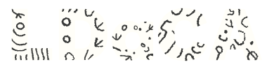
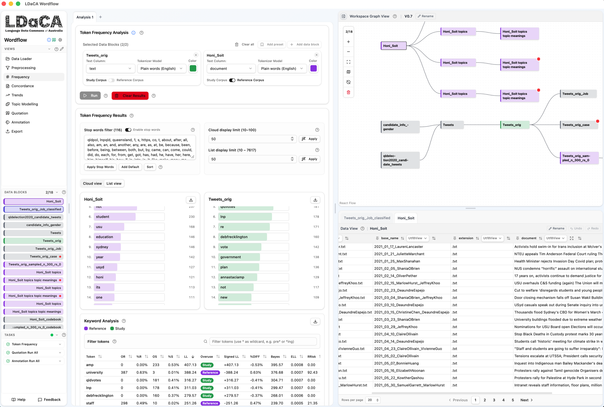

A hands-on afternoon: shape your data, look through the lenses, find topics, and code text with GenAI
Dr Chao Sun · Sydney Informatics Hub, The University of Sydney
Monday 26 October 2026 · 2:00-5:00 pm · Meeting Room M03, Mezzanine, Melbourne Connect

It offers an update when it starts: accept it. No prompt? Help → Check for Updates.
Not installed? sih.tools/wordflow: the desktop app for Mac or Windows, or Launch in Binder in your browser.
⟨short link and QR code to participant/hands-on-melbourne.md⟩
The main steps for each part, a few ideas if you finish early, and catch-up files if you fall behind.
Wi-Fi: eduroam. Stuck at any point? Put your hand up: a helper will come to you.
⟨directions from M03, from MDAP⟩
000 for police, fire or ambulance
⟨University of Melbourne campus security number, from MDAP⟩
Would you need help to evacuate? Please let us know now, quietly.
We acknowledge the Wurundjeri Woi-wurrung people of the Kulin Nation, the Traditional Owners of the land on which we meet today, and pay our respects to their Elders past and present.
A few minutes on screen: what a tool is for, and its first move.
That move on your laptop, a few steps from the sheet, the same for everyone.
Finish the steps with a helper beside you. Done early? The sheet has a few ideas to try.
All at the University of Sydney, a partner institution of the Language Data Commons of Australia (LDaCA) (DOI: 10.3565/kq2v-9g52), a co-investment partnership with the Australian Research Data Commons (ARDC) through the HASS and Indigenous Research Data Commons. The ARDC is enabled by the Australian Government's National Collaborative Research Infrastructure Strategy (NCRIS). Today hosted by the Melbourne Data Analytics Platform.
Modern text analysis (corpus methods, NLP, and now GenAI) mostly lives in Python and R. Learning and maintaining that is real effort on top of a busy research schedule.
Wordflow puts those methods behind point-and-click tools: your data stays visible, and every step can be inspected and retraced.
Text data flows through stackable, single-purpose tools: the meaning of an analysis comes from how you shape your data, not from the tool itself.

2,380 tweets by candidates in the 2020 Queensland state election, with a table of 133 candidates, their party and gender. Small enough that every step is quick on any laptop.
Bruns, A., Angus, D., Cohen, T., & QUT Digital Observatory (2022). Queensland Election 2020 on Twitter. QUT. doi.org/10.25912/RDF_1665115527020 · Australian Digital Observatory (ADO)
Every paragraph of the Federal Parliament's proceedings that mentions the GST (40,860), or is about housing (76,312), 1998 to 2026, with a speaker table to join for party and gender.
Hames, S., & Alpert, E. (2026). Proceedings of Australian Federal Parliament: An Analytical Database (Version 2026-09-21). Zenodo. doi.org/10.5281/zenodo.22868754 · RAPID-CDL
| Time | Part | You'll leave able to |
|---|---|---|
| 2:12 | 1 Shape your data | import, check and clean data; join and filter it into new blocks |
| 2:47 | 2 Look through the lenses | see which words, read them in context, count them over time and across groups |
| 3:25 | Break | |
| 3:35 | 3 Topics | find topics, read their most typical texts, name them, colour them by party |
| 4:00 | 4 Coding text with GenAI | code text yourself, then check how well an AI model agrees with you |
| 4:25 | Open lab | Hansard, your own data, or the ideas on your sheet, with us beside you |
created_at → Date and timeMost of these steps are in the August recordings, linked from sih.tools/wordflow. A few tools are new or have moved: the Data Builder (was Preprocessing) makes new blocks, and the new Data Editor changes a block's columns in place, with a preview and Undo.
party → Category, drag to orderBack at in 10 minutes. Your Topic Modelling run keeps going in the background: watch it in Tasks.
New since August: example texts, topic names and Colour by. Topic Modelling groups texts by meaning, not shared words.
It earns trust the way a human coder does: a codebook, a pilot, agreement scores, and revision.
Choosing a provider is a research decision: ethics approval, data privacy, local or commercial model, and cost. Today: a workshop key for a small, inexpensive model, deleted at 5 pm. Your own key works too.
Every tool is a lens. The interesting question is which lens, on which slice, for what purpose, and that's by your design.
sih.tools/wordflow: downloads for Mac and Windows, the browser option, and the documentation.
In the app: Help for the built-in docs, Feedback to tell us what you think.
Wordflow from zero, every tool step by step (90 min): youtu.be/ExYVSgvYIes
Coding text with GenAI, the Annotation tool (90 min): youtu.be/KcjJViYRYX4
Recorded in August on an earlier version: Workspace is now Project, Preprocessing is now the Data Builder, and the Data View is now the Data Editor.
⟨short link to the step sheet and checkpoints⟩
Hansard data: doi.org/10.5281/zenodo.22868754 (RAPID-CDL)
Cite: doi.org/10.5281/zenodo.20408328 (always the latest release)
Questions, or want Wordflow for your team? chao.sun@sydney.edu.au